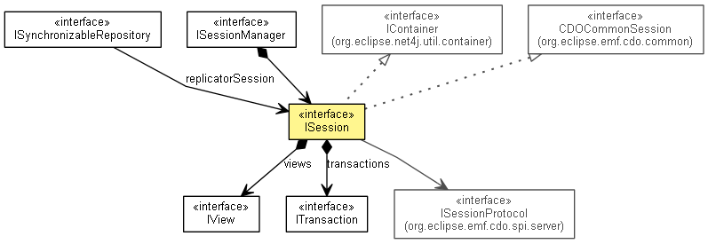

org.eclipse.emf.cdo.server
Interface ISession
- All Superinterfaces:
- CDOCommonSession, Closeable, IAdaptable, IContainer<IView>, INotifier, IOptionsContainer, IUserAware
- All Known Subinterfaces:
- InternalSession
- public interface ISession
- extends CDOCommonSession, IContainer<IView>

The server-side representation of a client session.
- No Implement
- This interface is not intended to be implemented by clients.
- No Extend
- This interface is not intended to be extended by clients.
getManager
ISessionManager getManager()
- Since:
- 3.0
getProtocol
ISessionProtocol getProtocol()
- Since:
- 3.0
getLastUpdateTime
long getLastUpdateTime()
- Since:
- 4.0
isSubscribed
boolean isSubscribed()
- Since:
- 2.0
openView
IView openView(int viewID,
CDOBranchPoint branchPoint)
- Since:
- 3.0
openTransaction
ITransaction openTransaction(int viewID,
CDOBranchPoint branchPoint)
- Since:
- 3.0
Copyright (c) 2011, 2012 Eike Stepper (Berlin, Germany) and others.